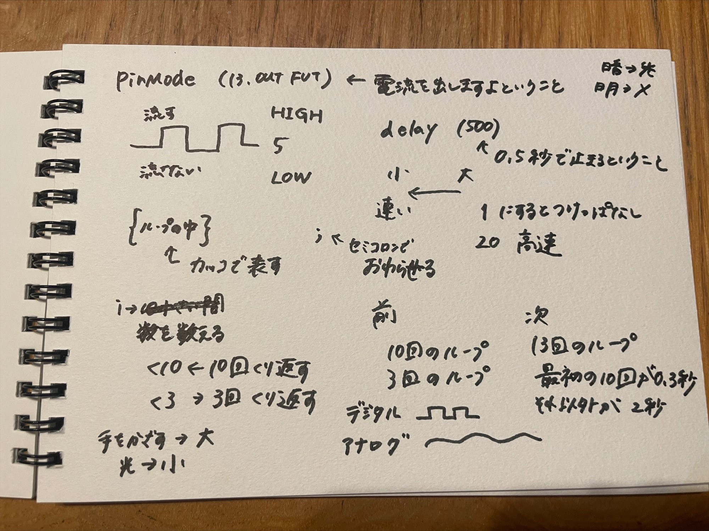
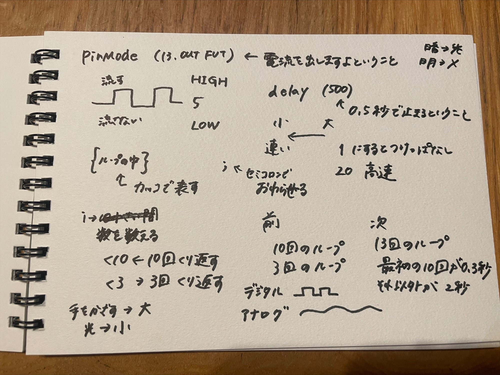

第1回｜マイコンボードの基礎
Assignment1
＊ドキュメンテーション＊
マイコンボードは…
LEDを光らせたり、抵抗を使ったりして光を弱めたりすることもできる。
 

Arduino
設定
Lチカ
明るさの測定
今回自分たちで行った作業
条件：抵抗を使って何もしなければLEDが光り、手をかざすとLEDが消える。
※if文は使わない
実際のプログラム
- void setup() {
- // put your setup code here, to run once:
- Serial.begin(9600);
- }
- void loop() {
- // put your main code here, to run repeatedly:
- int val=0;
- val=analogRead(1);
- Serial.println(val);
- if (val<150)
- digitalWrite(13,LOW);
- else
- digitalWrite(13,HIGH);
-
- }
Assignment2
＊正と負の感情のリスト化＊
😒負の感情
・分からないことがある
・テスト
・何か問題が起こった時
・朝起きること
🤩正の感情
・思い通りにいった時
・問題を解決した時
・友達と会った時